L'ingénierie numérique au service des transformations majeures. ESN et éditeur de solutions numériques, en France et en Guinée.
Qui nous sommes
Wayzure a été fondée en 2021 à Clamart, aux portes de Paris. Nous accompagnons administrations publiques, institutions et entreprises sur leurs données, leurs systèmes, leurs applications et la formation de leurs équipes, du cadrage jusqu'à l'adoption des outils.
Notre mission
Accompagner la modernisation des administrations publiques, des institutions et des entreprises par la conception et le déploiement de systèmes numériques fiables, sécurisés et adaptés aux réalités du terrain, avec un impact opérationnel mesurable et un transfert de compétences garantissant l'autonomie des équipes.
Maîtrise des données, sécurité, traçabilité et respect des cadres réglementaires.
Résoudre des problèmes concrets, avec des résultats mesurables.
Des solutions robustes, adaptées aux contraintes d'infrastructure et aux usages réels.
Avancer sans effet tunnel, et rendre les équipes autonomes après le déploiement.
01 · Implantations
Nous intervenons sur site en Île-de-France et à Conakry, et à distance partout ailleurs.
France
Siège social : 132 avenue Jean Jaurès, 92140 Clamart.
RCS Nanterre 901 524 082 · TVA FR22901524082.
Entreprises, PME et organisations en France ; logiciels WayPulse et WayPilot.
Guinée
Bureau : Almamya, Conakry.
RCCM GN.TCC.2023.B.01274.
Administrations, institutions, entreprises publiques et privées en Guinée ; logiciels WayLog et Waycare.
02 · Nos expertises
Transformer vos données en décisions, et l'IA en gains réels.
Décider avant d'investir, puis piloter jusqu'au résultat.
Concevoir, développer et faire vivre les logiciels de votre métier.
Que vos équipes maîtrisent les outils et en tirent parti.
Support utilisateurs et helpdesk, administration systèmes et réseaux, maintenance et infogérance, en appui des quatre pôles.
03 · Secteurs d'intervention
Dématérialisation, gouvernance des SI, pilotage par la donnée, services aux usagers.
Données fiables, reporting, applications métiers et intégration.
Suivi des opérations, tableaux de bord, outils de terrain.
Collecte de données terrain, suivi des filières et des programmes.
Traçabilité des livraisons, preuves numériques, suivi des tournées.
Développement d'applications, intégration, services IT.
Qualité des catalogues e-commerce, prospection, outils de gestion.
Plateformes de santé numérique, formation des équipes.
04 · Modernisation des administrations
Cadres réglementaires, traçabilité, continuité du service, infrastructures inégales : nous intervenons sur quatre domaines.
Formulaires en ligne, circuits de validation, archivage et suivi des dossiers : moins de papier et de ressaisies, des délais connus et traçables.
Audit de l'existant, feuille de route, cybersécurité et hébergement : un SI maîtrisé, documenté et conforme.
Indicateurs fiables et tableaux de bord partagés pour suivre un programme, arbitrer et rendre compte.
Démarches accessibles en ligne et sur mobile, pensées pour les contraintes de connexion, et agents formés pour les faire vivre.
Référence : Direction générale du Fonds de l'hydraulique (Guinée, 2023) : accompagnement dans la digitalisation, conception du site web et passage de plus de trente agents d'adresses personnelles à une messagerie professionnelle.
05 · Nos logiciels
Chacun répond à un problème précis, observé chez nos clients. Ils s'adoptent sans projet de développement ; Wayzure en assure la maintenance et les évolutions.
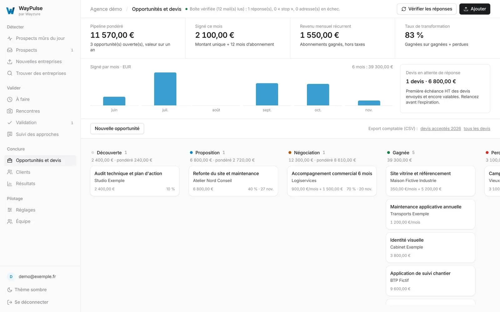
Prospection commerciale B2B
Repère les entreprises qui ont une raison réelle d'acheter, trouve les bons interlocuteurs, prépare l'approche que vous validez et suit la relation jusqu'à la signature.
Pour : dirigeants et équipes commerciales B2B · Marché : France
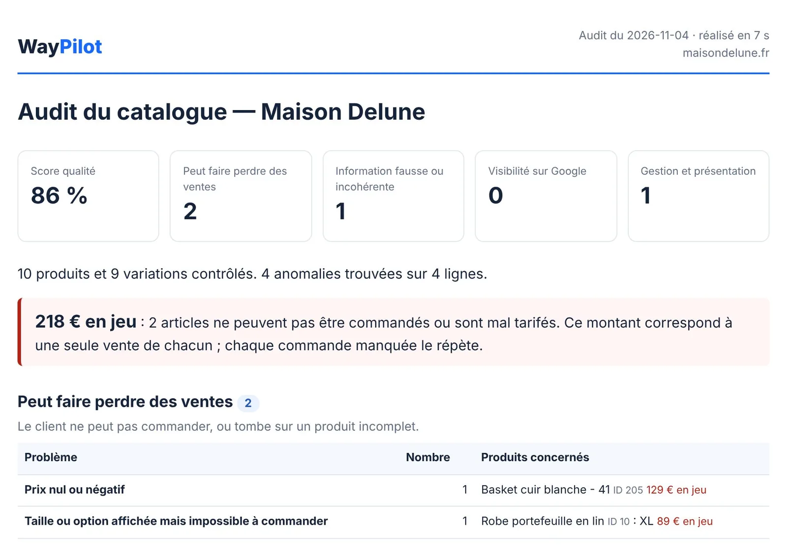
Qualité des catalogues e-commerce
Trouve dans une boutique WooCommerce ou Shopify les produits que les clients ne peuvent pas commander, les prix faux et les variations en double, puis les corrige après validation.
Pour : e-commerçants et agences · Marché : France
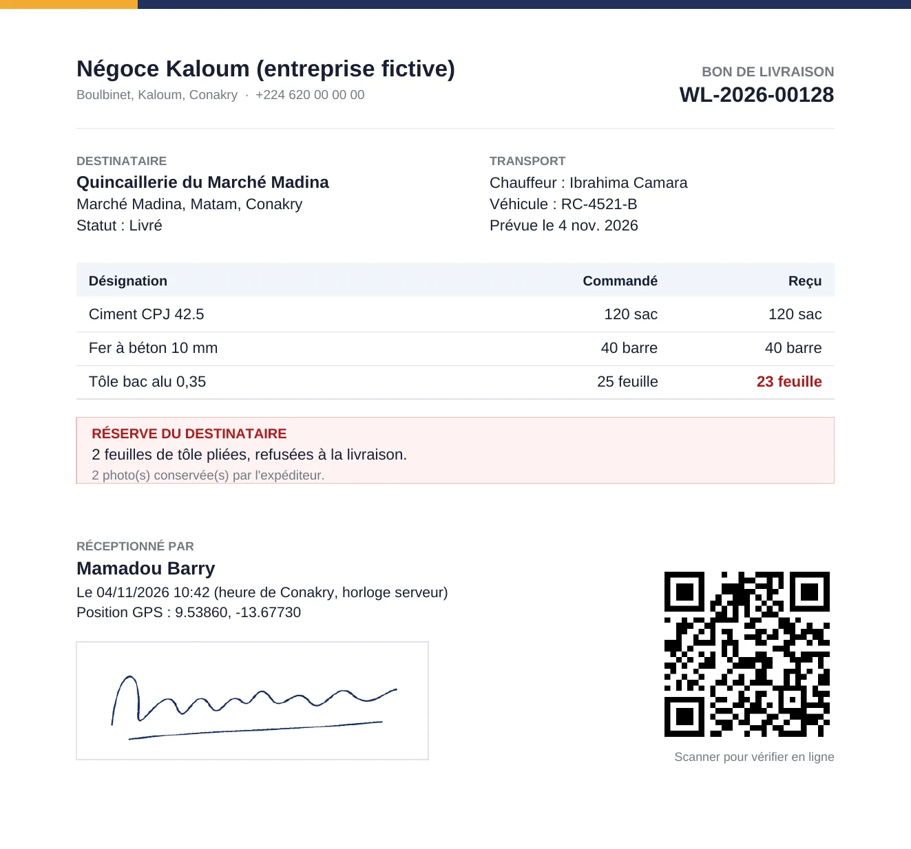
Logistique et opérations
Remplace le bordereau papier par une preuve de livraison signée sur le téléphone du chauffeur, avec photo, position et heure. Fonctionne sans réseau.
Pour : grossistes, distributeurs et transporteurs · Marché : Guinée
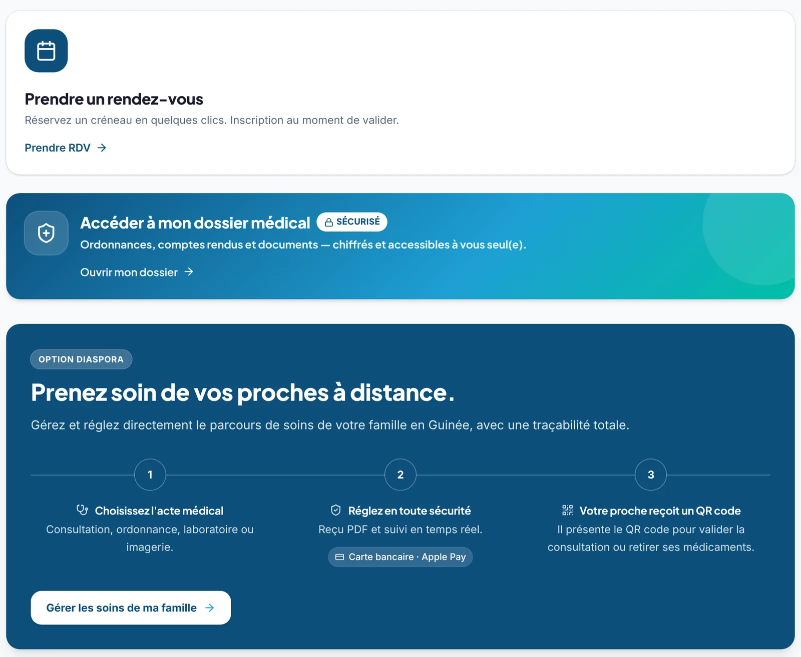
Santé numérique
Trouver un médecin vérifié, prendre rendez-vous, consulter à distance, tenir son dossier médical. La diaspora peut régler à distance les soins d'un proche.
Pour : patients, diaspora et professionnels de santé · Marché : Guinée et diaspora
Captures des applications en service, avec des données d'exemple. Sites : waypulse.wayzure.com · waypilot.wayzure.com · waylog.wayzure.com · waycare.care
06 · Références
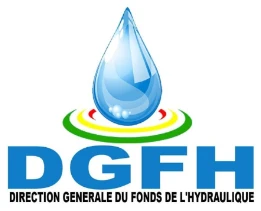
Administration publique, Guinée · 2023
Accompagnement dans la digitalisation : site web, puis passage de plus de trente agents à une messagerie professionnelle.
Guinée · 2021
Conseil et accompagnement du groupe ; logos de trois de ses marques : Villa Kijani, Écarlate et Khuru.
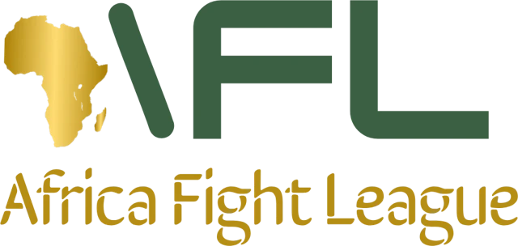
Ligue de combat française · 2024
Conseil en stratégie et en organisation, jusqu'à la première soirée de combat internationale de la ligue à Conakry ; création du logo.
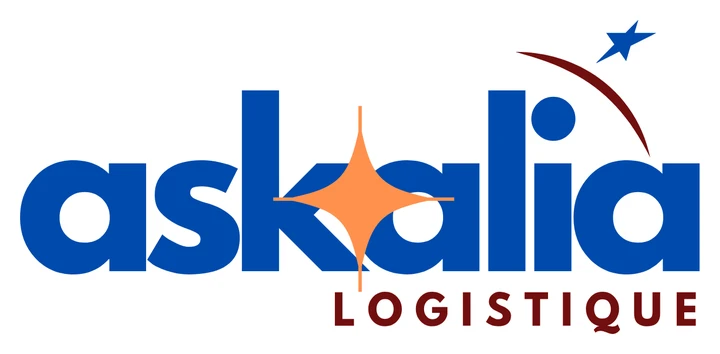
Logistique et transport, Guinée · 2024
Accompagnement à la rédaction de ses documents stratégiques et création de son logo.
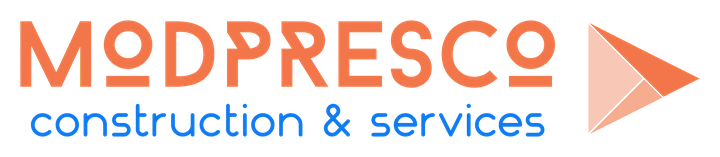
Construction et services, Guinée
Création du logo, développement du site web, digitalisation de ses services et de son marketing.
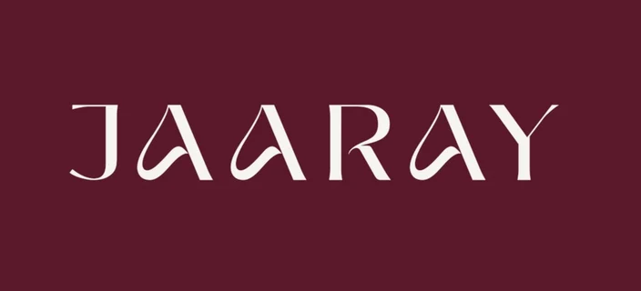
E-commerce, Maroc
Développement du site jaaray.site ; cas WayPilot publié avec l'accord de la boutique : 55 corrections appliquées après validation, sans échec.
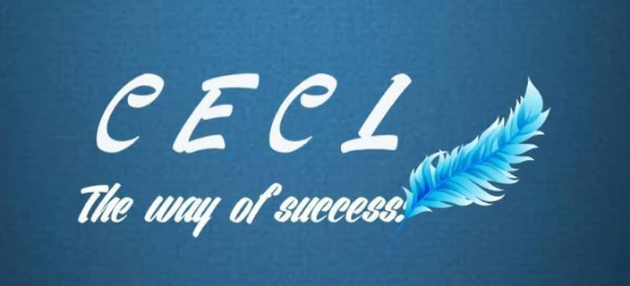
Formation en ligne, Le Caire · depuis 2022
Accompagnement de la réflexion jusqu'à la conception de son centre de formation en ligne.
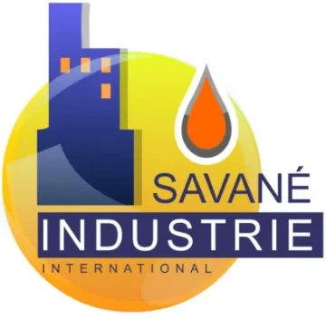
Industrie, Guinée
Maintenance du système et du parc informatiques, des systèmes de surveillance et de contrôle d'accès.
« Nous pensions que notre catalogue était propre. L’audit a montré des tailles L et XL que nos clientes ne pouvaient pas commander, un prix différent entre la fiche et la description, et des variations en double. Tout a été corrigé après notre accord, sans aucune erreur. Ensuite, WayPilot a converti nos prix du dirham à l’euro, avec des prix arrondis, en une seule opération. »
Fatoumata Diaraye, Directrice générale, JAARAY · avis publié sur waypilot.wayzure.com
Autres références : Larando Bio (site web), Bald Engineer (logo).
07 · Approche de réalisation
Beaucoup de projets numériques déçoivent parce que l'outil a été choisi avant que le problème soit posé. Nous commençons par comprendre le métier, et nous restons jusqu'à ce que l'outil soit adopté.
Vous exposez la situation, nous posons les questions qui comptent.
Ce qui sera fait, ce qui ne le sera pas, le délai et le prix. Si le projet ne nous paraît pas utile, nous le disons.
Le travail avance par étapes de quelques semaines, que vous validez avant la suite.
Maintenance, évolutions et formation, pour que vos équipes s'en servent sans nous.
Missions au forfait, sur un périmètre et un livrable définis, ou en régie, avec des consultants intégrés à vos équipes. Chaque mission est étudiée selon vos besoins et votre contexte.
Qualité du réseau, équipements disponibles, organisation des équipes et règles propres à votre secteur sont pris en compte dès la conception.
08 · Possibilités de partenariat
Cadrage, mise en œuvre et accompagnement de projets numériques portés par des ministères, des administrations ou des institutions.
Réponse conjointe à des appels d'offres, ou intervention en appui d'un intégrateur ou d'un cabinet sur un périmètre défini.
Mise en place de WayPulse, WayPilot, WayLog ou Waycare dans votre organisation, ou auprès de vos membres et partenaires.
Projets menés avec des partenaires techniques et financiers, où la présence en Guinée et en France facilite le suivi sur le terrain.
Contact
Quelques lignes suffisent : votre organisation, la situation actuelle, ce que vous voulez changer et l'échéance éventuelle. Nous revenons vers vous avec des questions précises ou une première analyse.